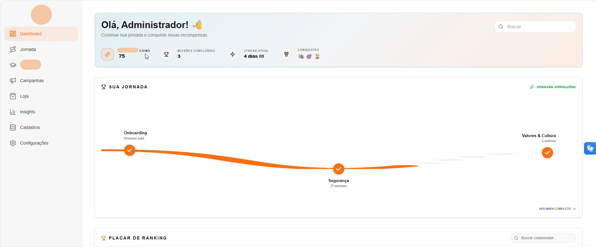

Projeto InternoFull Stack · Internal Project
Employee Experience Journey
Plataforma gamificada de Employee Experience desenvolvida para uso interno, com foco em autenticação, dashboards, campanhas, trilhas de aprendizagem, relatórios e automações.
Este é um projeto interno. Algumas imagens e informações foram omitidas por questões de confidencialidade.